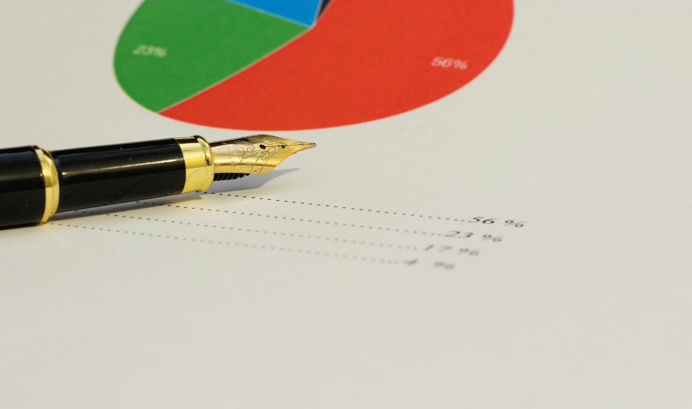

TL;DR
To effectively rebalance your investment portfolio, start with a $10,000 ETF like VTI and follow a 30-day review cycle. Avoid pitfalls like emotional trading and transaction fees. Utilize tools such as Personal Capital for easier management.
Start with a $10,000 Investment in an ETF

Begin your investing journey by allocating a budget of $10,000 into a diversified ETF, such as the Vanguard Total Stock Market ETF (VTI). This approach provides a balance of risk and potential returns across thousands of stocks.
Focus on sector allocations—like 30% in technology and 20% in healthcare—to spread risk. Additionally, consider your personal constraints, such as your risk tolerance and time horizon, which will influence how aggressively you should rebalance your portfolio.
Understanding the Trap of Temporary Market Trends
Understanding the Trap of Temporary Market Trends
Many beginners make critical errors rooted in a misunderstanding of market fluctuations. They often react impulsively to short-term trends, mistakenly assuming that their initial stock picks will consistently yield high returns.
This overconfidence can lead to a lack of diversification in their investments, amplifying their vulnerability to market volatility. For instance, in early 2021, as the stock market began to recover from the pandemic downturn, many investors flocked to tech stocks, pushing the Nasdaq Composite Index up by over 40% from its pandemic lows by September.
However, this surge set the stage for significant volatility, leading to a correction where many tech stocks lost up to 30% of their value by March 2022.
Neglecting traditional sectors, such as consumer staples or utilities, can prove detrimental. These sectors often provide stability during market downturns. For example, Procter & Gamble, a staple in many portfolios, grew its revenue by 8% during the same turbulent period, illustrating how a diversified approach can protect against losses.
Furthermore, a study by Goldman Sachs indicated that over a 20-year period, a balanced portfolio that included both equities and bonds outperformed portfolios heavily weighted in high-growth stocks during downturns by nearly 2% annually.
Consider a scenario involving a beginner investor, Sarah, who invested 100% of her portfolio in trendy tech stocks after hearing about their performance from social media influencers. Within six months, her portfolio surged by 50%. However, when the tech bubble burst, she found her once-thriving investment had plummeted, wiping out over 30% of her gains.
Your 30-Day Rebalancing Workflow
To effectively rebalance your portfolio, follow this structured workflow over 30 days: 1. Analyze Your Current Holdings: Evaluate your portfolio to understand how your assets have shifted from your target allocations. 2. Set Allocation Thresholds: Decide on a deviation percentage (such as 5%) that will trigger a rebalance. 3. Review Monthly: Track your assets monthly rather than quarterly to capture any significant shifts. 4. Make Necessary Adjustments: If your stock allocation exceeds your threshold, adjust by selling off overrepresented stocks and reallocating towards underrepresented sectors. This disciplined approach helps mitigate emotional biases in investing.
A Real Scenario for Beginner Investors

Imagine a beginner investor named Sarah starting with just $100 per month. To make the most of her modest investment, she opts for a systematic approach rather than waiting to amass a larger sum.
Each month, Sarah regularly allocates $60 to a broad market ETF, such as the Vanguard Total Stock Market ETF (VTI), which offers diverse exposure to U.S. stocks. She dedicates $20 to a dividend ETF, such as the Schwab U.S.
Dividend Equity ETF (SCHD), which aims to provide a steady income stream through dividends, and keeps the remaining $20 in a high-yield savings account to maintain liquidity.
Initially, Sarah's account may appear small—just $120 at the end of the first month. However, as she continues this routine, by the end of the year, she will have contributed a total of $1,200.
This disciplined approach allows her to build not just her portfolio but also her investment acumen. She begins to see how the market reacts to various news events, such as changes in interest rates or unemployment rates, and learns to ride out the inevitable fluctuations.
For example, during a market downturn when her ETF values dip by 15%, rather than panicking, she holds steady, recognizing that she has already factored in this volatility as part of her investment plan.
To illustrate, let’s say in the first month, VTI starts at $190 per share. Sarah buys 0.315 shares with her $60. By month six, the price fluctuates to $200, allowing her shares to appreciate in value. By sticking to her strategy, she transitions from a novice investor overwhelmed by market volatility to someone capable of analyzing her portfolio and making informed decisions.
Common Mistakes That Can Cost You
Common Mistakes That Can Cost You
Several beginner mistakes can severely impact your portfolio's performance. One common error is ignoring transaction fees. Many investors underestimate how fees can accumulate, particularly if they frequently trade.
For instance, if each transaction incurs a $10 fee and you make ten trades within a year for rebalancing, that's already $100 deducted from your investment returns. If your portfolio's annual growth is only 5%, these fees could consume a sizable portion of your profits, especially in a year where your investments yield only a 7% return.
Another frequent mistake is timing investments based on emotions. For example, you might feel pressured to sell your stocks when market headlines scream about a downturn, fearing losses.
This often leads to selling low; let’s say you bought shares for $50 each and panic-sell when the price drops to $40, locking in a loss of $10 per share. If all 100 shares are sold, you lose $1,000.
The opposite can occur as well — investors may jump in when the market is soaring, only to buy high just before a correction.
Furthermore, many beginners mistakenly think they can accurately time their rebalancing. This strategy can backfire. A common scenario is waiting to see if a particular asset rebounds after a decline. Suppose you decide not to rebalance on a $10,000 investment in tech stocks, hoping they'll climb back after a recent drop from $1,000 to $700 per share.
Tools to Simplify Your Rebalancing Efforts
When it comes to rebalancing your portfolio, various tools like Personal Capital and M1 Finance can streamline the process. Personal Capital provides features for tracking asset performance and net worth while offering personalized investment advice.
M1 Finance, on the other hand, allows you to create a customized portfolio that automatically rebalances according to your set percentages. For beginners, starting with tools like these simplifies investment management, affording one less thing to worry about.
FAQ
How often should I rebalance my portfolio?
It's recommended to rebalance at least once a year, but a monthly review can better capture market fluctuations.
What are the best tools for tracking my investment portfolio?
Tools like Personal Capital and M1 Finance offer excellent features for tracking and rebalancing your investments.
Is it better to rebalance manually or use automated tools?
Using automated tools can be more efficient, but understanding manual rebalancing helps deepen your investment knowledge.
What happens if I don’t rebalance my portfolio?
Failing to rebalance can lead to a portfolio that no longer reflects your risk tolerance and investment goals, increasing potential losses.
This article has been reviewed for practical usefulness and is updated as new investment tools and strategies emerge.
Next step
Use the article as a decision point, not just reading material. Your next system matters more than more browsing.
Search more articles
Find related tools, workflows, and guides.
Photo credits
- Photo 1: TheAndrasBarta via Pixabay
- Photo 2: Kelly Sikkema via Unsplash
- Photo 3: JESHOOTS.COM via Unsplash
- Photo 4: Niko Nieminen via Unsplash
- Photo 5: Benjamin le Roux via Unsplash